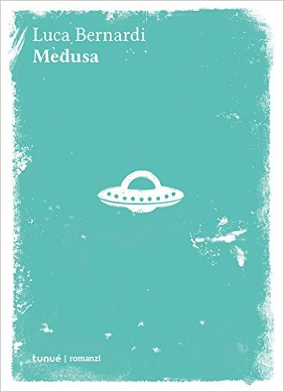

1) Domanda che si sentirà rivolgere sovente, ma che ci interessa particolarmente: lei proviene da un ambiente culturale sopra la media, data la professione dei suoi genitori: quanto ha influito sulle possibilità da parte sua di essere un lettore vorace - e quanto l'hanno influenzata nella scelta della scrittura / quindi del settore umanistico anziché, ad esempio scientifico.
Viviamo solo una vita, dunque è arduo stabilire quanto alcuni aspetti della nostra formazione abbiano contato e quali meno. Sono nato in una casa piena di libri, ho cominciato a leggere alle elementari, grazie ai miei genitori e alla mia maestra di italiano. Pur non disdegnando scienze e matematica, ho sempre nutrito una predilezione per le materie umanistiche. Non ho avuto dubbi né al momento di scegliere il liceo né quando all’università mi sono iscritto a Lettere Moderne. Cercando di tirare le somme, direi che i miei genitori hanno contribuito a farmi diventare un lettore. Per quanto riguarda la scrittura, lì ognuno deve vedersela da solo.
2) C'è qualcosa di autobiografico nel tratteggio di questa generazione post-adolescenziale? Non nel senso di nullafacenti o dei così detti "bamboccioni", dato che Lei è già laureato e nel pieno di attività lavorative, ma come esperienza generazionale di giovani super-tecnologici, con possibilità che solo 30 anni fa parevano impossibili. Per esempio la sua permanenza di un anno negli Stati Uniti, durante il 4° anno delle superiori, che Lei ha definito border-line. Ce ne può parlare?
Qualcosa di autobiografico c’è. Difficile generalizzare, ma alcuni dei venticinquenni che conosco mi pare si comportino come adolescenti. Non studiano, non lavorano, schivano le responsabilità. Io stesso mi sorprendo talvolta a comportarmi in maniera infantile.
A diciassette anni ho trascorso dieci mesi in Pennsylvania, negli Usa, come exchange student. Mi sono ritrovato a vivere in una famiglia con problemi di salute, pochi soldi e un traballante equilibrio coniugale. Per uno che non aveva praticamente mai visto i propri genitori litigare è stata un’esperienza al contempo istruttiva ed emblematica.
3) Di base nel racconto c'è anche un giallo, perché due bambini sono stati uccisi. Quanto questo escamotage è stato semplicemente propedeutico al racconto di perdita della realtà da parte del protagonista - e cosa ha fatto scaturire l'idea di innestare nel suo racconto un giallo appena accennato, dato che lo scheletro del romanzo stava già in piedi anche senza i due omicidi,
Ed in seconda battuta: quando questo potrebbe essere un genere che Lei potrebbe esplorare in un suo prossimo romanzo.
Fin dall’inizio volevo scrivere in prima persona la storia di un assassino schizofrenico. Però non mi interessava dare vita a una trama noir o poliziesca in senso classico. Volevo dare l’idea della progressiva disgregazione della mente di un omicida. Forse un giorno mi cimenterò in un thriller di impianto tradizionale. Ma non se ne avrei la capacità.
4) Lei ha usato un linguaggio particolarmente elaborato e ricco di neologismi ed espressioni gergali giovanili: non teme che non essendo un romanzo "scorrevole, che si legge tutto d'un fiato", possa risultare ostico al lettore medio - e quindi non sia possibile veicolarlo con successo? Quanto conta per Luca Bernardi il successo di pubblicazione e quanto la soddisfazione di un lavoro che rispecchia la propria idea iniziale?
Fino al momento della pubblicazione non mi sono preoccupato del lettore. Pensavo solo alla storia, ai personaggi, alle parole precise di cui servirmi per costruire le scene. Questo non significa che venire letto non mi interessi, tutt’altro. Ma mentre scrivo ho bisogno di isolarmi completamente anche soltanto dall’idea di un pubblico. Inoltre, lo stile del romanzo non è studiato a tavolino. Voce e protagonista di Medusa mi si sono infiltrati nella penna senza che poi riuscissi più a sloggiarli.
5) Il protagonista del romanzo ama farsi circondare da meduse ed alieni, mentre una volta che arriva nella riviera romagnola, depreca la mucillaggine dovuta al fondale sabbioso tipico dell'alta costa adriatica: vuole spiegare ai nostri lettori che legame ha il protagonista con le meduse e gli alieni?
Il protagonista di Medusa è un ragazzo profondo ma velleitario. Sogna di scrivere un dizionario che superi il linguaggio umano e crei un ponte tra i linguaggi degli organismi non mammiferi (come per esempio le meduse) e quello degli alieni, con cui da anni baratta per le proprie emozioni in cambio di informazioni di carattere linguistico.
6) Nella bella intervista che Rai Radio3 Fahrenheit le ha dedicato lo scorso 21.11, accenna al fatto di essere un lettore vorace: parla di testi classici, di poesia e di filosofia. Vorremmo sapere se legge anche thriller, gialli, noir, etc... - e nel caso, quali autori legge.
Come lettore cerco di spaziare il più possibile. Ho amato moltissimo Sherlock Holmes, ma tra gli scrittori di polizieschi il mio preferito è Raymond Chandler.
7) Si è mai approcciato al genere ThrillerNordico?
Credo di no. Ho visto qualche film tratto dai romanzi di Stieg Larsson.
8) Tutti abbiamo qualche cosa che desideriamo tanto che avvenga. Qual è Il suo sogno nel cassetto?
Mi piacerebbe un giorno riuscire a vivere scrivendo.
9) In chiusura, vorremmo chiedere se, dopo la presentazione della sua prima opera (edita da Tunuè), ha per caso già in mente un possibile nuovo romanzo, oppure se si vuole meritatamente godere questo momento di presentazioni prima di farsi riassorbire da un'altra vicenda.
In questo momento non ho il tempo né la quiete per buttarmi a capofitto in un nuovo romanzo. Ho però qualche idea, ancora informe, a cui mi riprometto di lavorare nei prossimi mesi.
Luca Bernardi
Intervista a cura di Marina Morassut
Di LUCA BERNARDI su Thrillernord:
 IL LIBRO - Sulle montagne attorno a Bolzano qualcuno spinge una bimba da una scarpata. Dieci anni dopo, sulla costa tirrenica si scopre il corpo di un bambino annegato. Nel frattempo, un ragazzo velleitario e disadattato, con l'ossessione degli extraterrestri e il sogno di compilare un dizionario che vada oltre il linguaggio, ciondola con i genitori in uno stabilimento balneare di lusso. Si invaghisce di un'adolescente, sfida marmocchi a ping-pong, fantastica sul futuro successo della sua opera. Durante una festa dai ricchi zii, le sue fissazioni si inaspriranno fino a spingerlo a fuggire con tre amici verso la costa opposta...